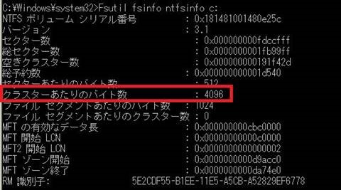

Exchange Serverをご利用のお客様より、最近お問い合わせが増加傾向にある NTFS の FAL サイズ制限について事象と対処策についてご紹介します。
事象概要
NTFS では File Attribute List (FAL) と呼ばれるファイル毎のリストにてデータの実態がディスク上のどこに格納されているか等の情報を管理しています。この、FAL にはサイズ制限があり、使い続けている以上サイズが小さくなることはありません。
このため、長期にわたり運用されている環境や、非常に大きなデータベース ファイルを運用されている場合、フラグメントの進行とともに この FAL のサイズが大きくなり、最終的にサイズ制限に抵触することがあります。
この場合、NTFS としてデータベースへの書き込みができなくなるため、Exchange Server (主にメールボックス サーバー) では結果としてデータベースのマウントが解除される、または DAG のデータベース コピーのレプリケーションが停止し、データベース コピーの状態が FailedAndSuspended になるなどの問題につながります。
このとき、以下のエラーがアプリケーション ログに記録され、該当のデータベース ファイルの NTFS の FAL サイズ制限に抵触したことがわかります。
ソース: ESE
イベント ID: 482
レベル: エラー
説明:
Information Store - <データベース名> (13184) <データベース名>: ファイル “<edb ファイル パス>” のオフセット 4075655528448 (0x000003b4f0000000) に 0 (0x00000000) バイトを書き込めもうとしましたが、システム エラー 665 (0x00000299): “ファイル システム制限のため、要求された操作を完了できませんでした “ のため、0.000 秒経過しても書き込むことができませんでした。書き込み処理は、エラー -1022 (0xfffffc02) のため失敗します。このエラーが引き続き発生する場合は、ファイルが破損していて以前のバックアップからこのファイルを復元する必要がある可能性があります。
上記のイベントにありますエラー コード 665 (0x00000299) は ERROR_FILE_SYSTEM_LIMITATION を意味し、イベントに記録されているデータベース ファイルが NTFS の FAL のサイズ制限に抵触しているため書き込みが行えなかったことを示しています。
また、Exchange 2010 環境の場合は以下の ESE 739 のエラーも記録されます。
ソース: ESE
イベント ID: 739
レベル: エラー
説明:
Information Store (13184) <データベース名>: データベース ‘<edb ファイル パス>’ の NTFS ファイル属性サイズが 257216 バイトで、204800 バイトのしきい値を超えています。データベースのファイルを再シードするか、コピーまたはバックアップから復元して、データベース ファイルがファイル システム制限により拡張できなくなることを防ぐ必要があります。
対処策
この動作は NTFS の制限となるため、対処策としては DAG 環境の場合は再シードを実施する、あるいはバックアップ ファイルから復元する等して、データベース ファイルを作り直す必要ございます。
データベース コピーを再シードする場合は、以下の参考情報をご参照ください。
Title: メールボックス データベース コピーの更新
URL (Exchange 2010): https://technet.microsoft.com/ja-jp/library/dd351100(v=exchg.141).aspx
URL (Exchange 2013): https://technet.microsoft.com/ja-jp/library/dd351100(v=exchg.150).aspx
補足情報
Exchange 2010 は RTM を 2009 年 11 月にリリースしてから約 7 年が経過しました。
これまでの運用において、DAG 環境で再シードを実施する機会がなかった場合は、長い運用期間の中でファイルのフラグメントと共にデータベース ファイルの FAL が大きくなってきており、それが弊社サポートへの本事象のお問合せ増加の要因となっていると考えられます。
DAG 環境の場合は、データベースの再シードを実施することで本事象の発生を起きにくくすることが可能です。
その他に本事象で考慮が必要な点として、NTFS アロケーション ユニット サイズ (ディスク上でひとまとまりのブロックとして扱うサイズ) がございます。
Exchange 2010, Exchange 2013 での NTFS アロケーション ユニット サイズ は共に 64 KB が推奨値となっておりますが、推奨値以下で運用いただいている場合はこの事象が発生しやすくなります。
推奨値以下の場合は、データベースの 1 ページあたりの書き込みが複数に分けられて書き込まれることから、必ずしも隣り合わせのセクションに書き込まれるとは限らないため、断片化が生じやすく、FAL のサイズも増加しやすくなります。
現在の NTFS アロケーション ユニット サイズは以下のコマンドにて確認が可能です。
手順
コマンド プロンプトを管理者権限で起動します。
以下のコマンドを実行します。
1
fsutil fsinfo ntfsinfo <ドライブ レター>:
例)
1
fsutil fsinfo ntfsinfo F:
“クラスターあたりのバイト数” (英語の場合は Bytes Per Cluster) より現在の NTFS アロケーション ユニット サイズを確認します。

また、以下のブログにて Exchange 2007 についてではありますが、本事象についての詳細をご紹介しています。
Title: How fragmentation on incorrectly formatted NTFS volumes affects Exchange
URL: https://blogs.technet.microsoft.com/mikelag/2011/02/09/how-fragmentation-on-incorrectly-formatted-ntfs-volumes-affects-exchange/
※ 本情報の内容（添付文書、リンク先などを含む）は、作成日時点でのものであり、予告なく変更される場合があります。